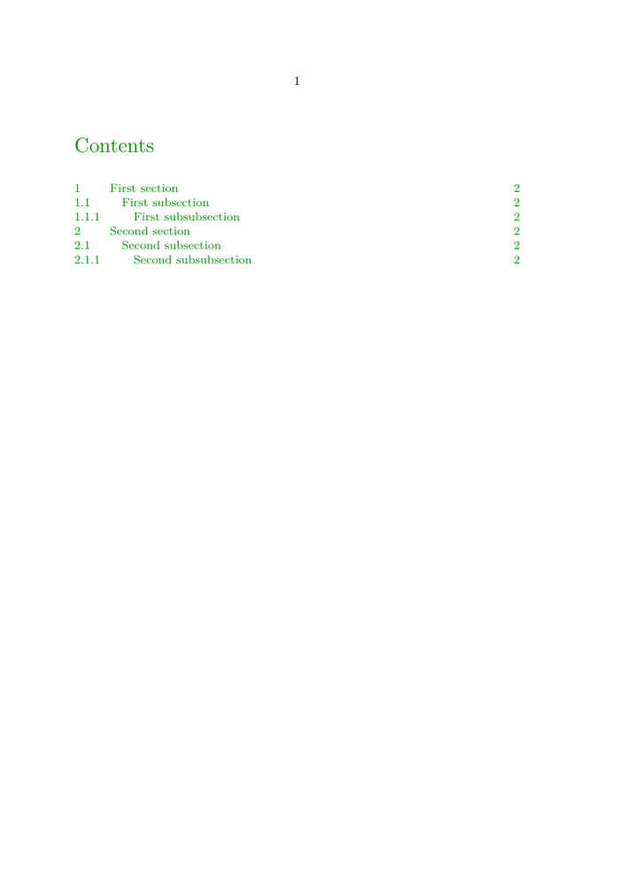
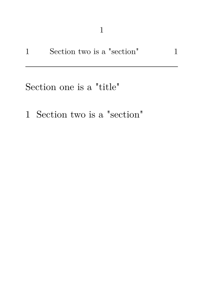
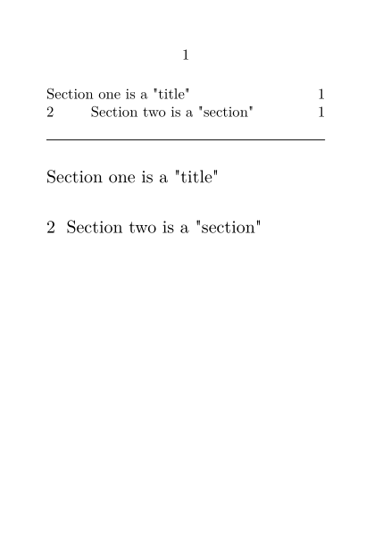

Contents
- 1 Modifying the default ToC
- 2 Setting the number of sections in the ToC
- 3 Including unnumbered heads in the ToC
- 4 Explicitly excluding headings from the ToC
- 5 Page numbering in ToC
- 6 Adjusting spacing between lines in ToC
- 7 Swap Page Number and Title
- 8 Forced Page Break
- 9 Dots in section numbers
- 10 Author in ToC
- 11 Several ToC's in different languages
- 12 Creating other "Table of ..."
- 13 How ConTeXt MkII generates the ToC
- 14 ToC (and other lists) via project structures
- 15 Alternating filler dots
- 16 Suppressing page numbering for the ToC pages
- 17 Other styles
- 18 See also
Modifying the default ToC
The default head that \completecontent places can be altered with \setupheadtext.
You can customize the appearance, number of shown levels and other attributes of predefined ToC.
Please note that the level parameter has no effect in MkIV, however you can set the levels used in the table of contents with the list option.
You may use \placelist[chapter,section] (optionally adding \title{Contents} before) instead of \setupcombinedlist.
-
\setuppapersize[A5] \setupcolors[state=start] % A new ToC title \setupheadtext[content=All my contents] % turn off numbering of some levels \setuphead[subsection][number=no] \setuphead[subsubsection][number=no] % ToC % alternative=c, space to the page number is filled with dots \setupcombinedlist[content][list={chapter,section,subsection,subsubsection}, alternative=c,] % in MkII replace list with level=4: \subsubsubsections are not listed in ToC %\setuplist[chapter][width=5mm, style=bold] \setuplist[section][width=10mm, style=bold] \setuplist[subsection][width=20mm] % pagestyle=normal for changing the appearance of pagenumber \setuplist[subsubsection][width=20mm, style=slanted, pagestyle=normal] \starttext \startcolor[darkgreen] \completecontent \stopcolor \page[yes] \section{First section} \subsection{First subsection} \subsubsection{First subsubsection} \subsubsubsection{First subsubsubsection} \section{Second section} \subsection{Second subsection} \subsubsection{Second subsubsection} \subsubsubsection{Second subsubsubsection} \stoptext
-

Setting the number of sections in the ToC
To set the number of sections included in the table of contents you can explicitly set the list of items included in the 'contents' list. To include chapter, section, and subsection, in the table of contents use:
-
\starttext \setupcombinedlist[content][list={chapter,section,subsection}] \startcolor[darkgreen] \completecontent \stopcolor \page[yes] \section{First section} \subsection{First subsection} \subsubsection{First subsubsection} \subsubsubsection{First subsubsubsection} \section{Second section} \subsection{Second subsection} \subsubsection{Second subsubsection} \subsubsubsection{Second subsubsubsection} \stoptext
Or to include subsubsection in the table of contents as well use:
-
\starttext \setupcombinedlist[content][list={chapter,section,subsection,subsubsection}] \startcolor[darkgreen] \completecontent \stopcolor \page[yes] \section{First section} \subsection{First subsection} \subsubsection{First subsubsection} \subsubsubsection{First subsubsubsection} \section{Second section} \subsection{Second subsection} \subsubsection{Second subsubsection} \subsubsubsection{Second subsubsubsection} \stoptext
- 
In MkII this was achieved with the level parameter.
Including unnumbered heads in the ToC
ConTeXts head mechanism is designed in such a way that heads are stored in a list when they have an incrementing counter, so you must activate this for the 'unnumbered' heads (title, subject, subsubject, etc.) In addition, the \placecontent command is an aggregate of only the numbered heads; to place a list that also includes unnumbered heads, you must manually specify all the heads you want.
-
% mode=mkii \setuphead[subject] [incrementnumber=yes, % keep track of the number number=no] % but don't show it % Set area in which number is placed: % distance from margin to left edge of title % NB: MkIV may ignore `width` % for unnumbered entries, and may require % you to set `margin`, instead. \setuplist[section][width=2cm] \setuplist[subject][width=2cm] \setupcombinedlist[content][list={chapter,subject,subsubject,section,subsection}] \setuppapersize[A7][A7] \starttext \placecontent \page \chapter{One} \section{Sec A} \subject{Sub B} \section{Sec C} \stoptext
- internal error: copy error 5fqbgT/cropped.pdf
Quite probably, the un-numbered sections to be included are at the beginning or end of the document (e.g. a Preface and a Bibliography) and should *not* modify the enumeration of the actual numbered sections. In this case you have to use "incrementnumber=list" instead. A slightly modified example would be:
-
% mode=mkiv \setuppapersize[A7][A7] %list the "subject" sections in the ToC but don't modify the "section" counter: \setuphead[subject] [incrementnumber=list] %"width": distance between number and text in the ToC entry, "margin" : indent of ToC entry relative to left page margin \setuplist[section][width=1.5em] \setuplist[subsection][width=2.5em, margin=1.5em] \setuplist[subject][margin=1.5em] \setupcombinedlist[content][list={subject,section,subsection}] \starttext \completecontent \subject{Preface} \section{One} \subsection{Sec A} \section{Two} \subject{Bibliography} \stoptext
-

Including unnumbered heads in the ToC v2
Sometimes one wants an unnumbered chapter, say introduction. Usually this concern the first or last chapter, this is where you will want to use the available macro divisions like \startfrontmatter.
-
\setuppapersize[A7] \starttext \placecontent[criterium=all] \blank[line]\hrule\blank[line] \startsubject [title={Section one is a "title"}] \stopsubject \startsection [title={Section two is a "section"}] \stopsection \stoptext
- 
-
\setuppapersize[A7] \setuphead [subject] [incrementnumber=yes, % keep track of the number number=no, % but don't show it ] \setupcombinedlist [content] [list={subject,section}] \starttext \placecontent[criterium=all] \blank[line]\hrule\blank[line] \startsubject [title={Section one is a "title"}] \stopsubject \startsection [title={Section two is a "section"}] \stopsection \stoptext
- 
Explicitly excluding headings from the ToC
To exclude headings from the table of contents, create a new heading that is a copy of the current heading. The new heading will not be in the list of heading that are printed to the table of contents (see previous section). The command to create a copy of a heading is \definehead. Below is an example of excluding some subheadings from the table of contents. Note that typically this would be done for all subsections under a specific section, but as seen below this is not required:
-
\starttext % The first parameter is the new heading name, and the second is the % name of the heading that is copied. \definehead[mysubsection][subsection] \startcolor[darkgreen] \completecontent \stopcolor \page[yes] \section{First section} \subsection{First subsection} \mysubsection{Second subsection} \subsection{Third subsection} \stoptext
-

Page numbering in ToC
If you have a special page numbering style it won't automatically be reflected in the table of contents. You need to set the parameters of the table of contents separately. For example,
\starttext \startfrontmatter \placecombinedlist[MyContentsList] \stopfrontmatter \startbodymatter \setuppagenumbering[way=bychapter, left=A, chapternumber=yes, numberseparator=/] ... \stopbodymatter
will give you pagenumbering such as A1/1, A1/2 etc. on the pages in the bodymatter. In the table of contents, however, these will show up as 1-1, 1-2 etc. The ToC needs to be formatted separately.
To get a prefix to the page numbering (like "A"), use
\def\ChapterPrefix#1{A#1} \setuplist[chapter][pagecommand=\ChapterPrefix]
To get the numberseparator working, you need to know that the ToC will use the separator that is active at the time the ToC is output. So you need to set it immediately before you call the ToC command, e.g.
% MkII \setuppagenumbering[numberseparator=/] \placecombinedlist[MyContentsList]
The above method does not work in MkIV. Hence the code below illustrates how to get it working under MkIV. (Seems the example got lost?) It should be noted that MkIV and MkII are incompatible with respect to this feature.
As an example, consider that the frontmatter uses roman numerals and bodymatter remains unchanged. To reflect the romannumerals of the front matter in the ToC,
\definestructureconversionset[frontpart:pagenumber][][romannumerals] \definestructureconversionset[bodypart:pagenumber] [][numbers] \setuplist[chapter][pageconversionset=pagenumber] \startsectionblockenvironment[frontpart] \setupuserpagenumber[numberconversion=romannumerals] \setuppagenumber[number=1] \stopsectionblockenvironment \startsectionblockenvironment[bodypart] \setuppagenumber[number=1] \stopsectionblockenvironment
Adjusting spacing between lines in ToC
Sometimes you want your ToC to be denser than the interlinespace used in the document in general. You can achieve this by wrapping the ToC.
\start \setupinterlinespace[small] \placecontent \stop
See \setupinterlinespace for more options.
Swap Page Number and Title
To move the page number to the left of the section title, consider using a command:
\define[3]\SectionListEntry {\par \leftaligned\bgroup \hbox to 2em{\color[red]{#3}}% \hskip 1em \vtop{\hsize\dimexpr\textwidth-3em\relax#2} \egroup \par} \setuplist[chapter][headnumber=no,pagenumber=no,style=\bfc] \setuplist[section][alternative=command,command=\SectionListEntry]
Forced Page Break
New solution: Use \setinjector
(LMTX solution from 2023)
To add a manual/forced page break in a table of contents, you first have to define it. This puts the break before the given heading.
\definelistextra[page][before=\page]
Then, when you place your ToC, you have to call for the extras and define the spot for the break:
\placecontent[extras={6=page}] % puts break before Chapter 6 list item
(MkIV solution given by Hans on the mailing list on 2010-09-29.)
Dots in section numbers
Last Number Dot in Table of Contents (e.g. 2.1.3.): see Section_numbering.
If you want to avoid a dot if there's no number, try this solution (by Wolfgang Schuster as of 2008-04-29):
\setuplist [chapter,section,...] [numbercommand=\DotAfterNumber] \def\DotAfterNumber#1{\doiftext{#1}{#1.}}
Author in ToC
(updated in 2020-09)
Add your author or other metadata to your section title in another brackets:
\startsection[title={Whatever}][author={A. Uthor},subtitle={I’d like to say}] ... \stopsection
Now you can refer to this data as \structureuservariable{subtitle} in text and headings, and as \structurelistuservariable{author} in a list setup:
\define[1]\SectionTocEntry{% \structurelistuservariable{author}\crlf% #1\crlf% title \structurelistuservariable{subtitle}}% } \setuplist[section][ textcommand=\SectionTocEntry, ]
You’ll probably have sections that don’t use that information, and you don’t want empty lines, do you? Then check on \ rawstructurelistuservariable:
\define[1]\SectionTocEntry{% \doifnot{\rawstructurelistuservariable{author}}{}{\structurelistuservariable{author}\crlf}% #1% title \doifnot{\rawstructurelistuservariable{subtitle}}{}{\crlf\structurelistuservariable{subtitle}}}
MkII
see setup for author/title/subtitle titling and author in ToC in Proceedings style.
You can write desired items to the ToC or an other list (see below) using \writetolist.
Several ToC's in different languages
If you want to have two tables of contents in your document, one in a native language and the other, for example, in english. This is how to do it:
\mainlanguage[de] \starttext \completecontent %\start\language[en] \start\mainlanguage[en] \completecontent \stop \chapter{\translate[en=Chapter One,de=Kapitel Eins]} \chapter{\translate[en=Chapter Two,de=Kapitel Zwei]} \stoptext
Creating other "Table of ..."
Generally all "Table (List) of ..." are defined with \definelist and \setuplist. You can "collect" several section levels in one list using \definecombinedlist, that's even explained in "ConTeXt, an excursion" (see Documentation).
To have some parts of your title texts not appear in the table of contents, use \nolist and have a look at mag-0001.pdf.
How ConTeXt MkII generates the ToC
(from Tobias Burnus on the mailinglist)
The mechanism is a follows:
- TeX is run and chapter names with pagenumbers etc. are saved into <jobname>.tui.
- TeXutil is run and sorts some entries in *.tui and writes *.tuo
- TeX is run again, reads .tuo and uses that data to produce the table of contents etc. (and produces a new .tui) As this changes the page numbers (for longer table of contents), TeXutil and TeX are re-run again.
In principle TeXExec should do this automatically.
MkIV uses *.tuc files and uses less runs.
ToC (and other lists) via project structures
ConTeXt Mark IV supports the generation of lists via Project and file management. Thus, given a product (possibly within some project), and given two or more components in that product with its own sections (chapters, sections, etc) or floats (figures, tables, etc); then each component can have its own list of contents independent of the other. This is done by setting criterium=component. For example, create three files, one product and two components (slightly modified version of a sample posted by Hans in 2011):
\startproduct example-1-product \definecombinedlist[summary][chapter] \setupcombinedlist[summary][criterium=component] \component example-1-component-a \component example-1-component-b \stopproduct \startcomponent example-1-component-a \starttitle[title=Contents] \placesummary \stoptitle \startchapter[title=Ward] \input ward \stopchapter \stopcomponent \startcomponent example-1-component-b \setupheadnumber[chapter][-1] \starttitle[title=Contents] \placesummary \stoptitle \startchapter[title=Zapf] \input zapf \stopchapter \stopcomponent
Processing the component file will give you a separate table of contents for each component.
Alternating filler dots
The following code was provided by Wolfgang on the mailing list (http://www.ntg.nl/pipermail/ntg-context/2013/071144.html). It produces alternating dots like in Knuths' TeXbook and MetaFont book. The \definefiller command requires ConTeXt version 2013.01.13 or newer.
\definefiller [pavel-0] [alternative=symbol, method=global, width=1em, leftmargin=.5em, rightmargin=.5em, symbol=\clap{.}] \definefiller [pavel-1] [pavel-0] [align=left] \definefiller [pavel-2] [pavel-0] [align=middle] \newconditional\PavelState \define\PavelFiller {\ifconditional\PavelState \global\setfalse\PavelState \filler[pavel-1]%% \else \global\settrue\PavelState \filler[pavel-2]%% \fi} \setuplistalternative [c] [filler=\PavelFiller] \starttext \completecontent [alternative=c] \dorecurse{10}{\expanded{\chapter{Chapter \recurselevel}}} \stoptext
Suppressing page numbering for the ToC pages
Sometimes the document needs to have pagenumbering according to realpages, but numbering shouldn't be visible until the first text page. This is Wolfgang's trick (January 2013) for suppressing the pagenumbers so that they'll still be counted:
\startsectionblockenvironment[frontpart] \setuppagenumbering[location=] \stopsectionblockenvironment %\startsectionblockenvironment[bodypart] %\setcounter[userpage][1] %\stopsectionblockenvironment \starttext \startfrontmatter \completecontent \stopfrontmatter \startbodymatter \dorecurse{10}{\expanded{\chapter{Chapter \recurselevel}}} \stopbodymatter \stoptext
Other styles
- Flushing headline data_without typesetting them in the text , which makes them available for ToC.